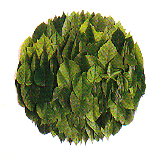

Still struggling to get the last part of this script to work:
size(500, 500)
coreimage = ximport("coreimage")
canvas = coreimage.canvas(200, 200)
l = canvas.layer("lily.tif")
canvas.draw(0,0)
ovsx = 80
ovsy = 80
ox = 0
oy = 1
dotsize = 5
dx = WIDTH / float(ovsx) +2
dy = HEIGHT / float(ovsy) +2
# main SVG path
svg = ximport("svg")
data = open("myshape.svg").read()
paths = svg.parse(data)
myshape = paths[0]
# Smaller SVG paths to the populate the main shape
def randomsvg():
f = files("paths/*.svg")
data = open(choice(f)).read()
paths = svg.parse(data)
return paths[0]
for x, y in grid(ovsx, ovsy):
sz = random(dotsize)
px = x*dx-sz
py = y*dy-sz
if myshape.contains(px, py):
smallshapes = randomsvg()
translate((px+random(-ox, ox), py+random(-oy, oy))
fill(random(), 0, -5, random())
drawpath(smallshapes)
If you just want to display an image in NodeBox (not manipulate it), the image command is probably what you are looking for. You can use it to display JPG, GIF, PNG, ... Then instead of using drawpath (for vectors) at the bottom of the script you would do:
image("leaf.png", 0, 0)Did that help?
thanks
Thanks a million for the help. This works great for what I had in mind. I also edited your script to use a tif image instead of the cog image:
size(500, 500)
svg = ximport("svg")
data = open("path.svg").read()
flower = svg.parse(data)
flower = flower[0]
coreimage = ximport("coreimage")
scale(2.5) # flower size
translate(10, 10) # flower position
spacing = 8 # more or less cogs onscreen
for x, y in grid(WIDTH/spacing , HEIGHT/spacing, spacing, spacing):
if flower.contains(x, y):
fill(2, random()/4, random(), 1) # each cog's color
push()
translate(x, y)
scale(random(-0.16)) # makes cogs bigger or smaller
image("lily.tif", 0, 0)
pop()
thanks again!

Photobot
Posted by Viki on Aug 07, 2007
Hi i'm looking for some help. Basically i've attached an image that illustrates the type of effect i'm trying to achieve (please see attached - although this contains more than one type of leaf).
If I could arrange duplicates of an image inside a path, it would have lots of scope and look great inside a type path.
I was wondering if anyone out there has tried combining the Photobot library with the BitBop script.
I'm afraid bringing these two things together surpasses my programming knowledge at this moment in time.
Any advice would be greatfully received.
Viki